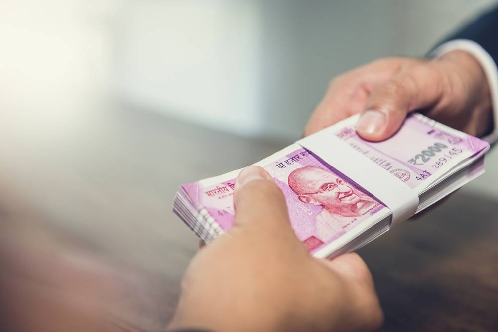

<div>
    <div class="cls1">
    <h1 style="padding-top: 20px;"><b>Bharat Bank</b></h1><br>
    <h4>Your Perfect Banking Partner</h4><br>
    <p> Bharat Bank Limited is a major Indian Private sector bank headquartered in Aluva, Kochi. 
        The bank has more than 1,250 branches spread across different states in India. 
        With a customer base of over 10 million, including 1.5 million NRI customers and a large 
        network of remittance partners across the world, Bharat Bank handled more than 
        15% of India's total inward remittances of $79 billion in 2018. The Bank has remittance 
        arrangements with more than 110 Banks/Exchange Companies across the world. The Bank is 
        also listed in the BSE, NSE and London Stock Exchange and has a branch in India's 
        first International Financial Services Centre (IFSC) at GIFT City.</p>
    </div>
</div>


<!-- <carousel>
    <slide>
      
    </slide>
    <slide>
      
    </slide> -->
    <!-- <slide>
      
    </slide> -->
  <!-- </carousel> -->
